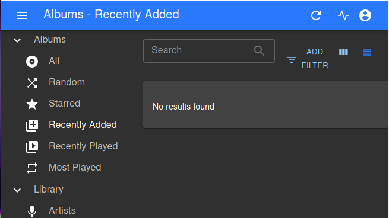

When Google Music shut down
this month, instead of taking the easy way out and migrating to Youtube Music I decided to have a stab
at hosting my music collection myself. I think that it went pretty well so I thought I'd share the details.
Disclaimer: This is certainly not the most cost effective or simple way to solve this problem. It's suitable
for the fairly niche intersection of people who have a personal Kubernetes cluster and are too stubborn to
just give up and use Spotify.
Navidrome
Searching for an open source Google Music replacement, it didn't take too long to find Navidrome, a modern web based streaming server written in Golang.
It met my main fairly basic requirements:
- Browser based music streaming
- Mobile support (through DSub)
- (nice to have) Multiple user support
I discovered that this family of music streaming software tend to support the Subsonic API which means that generally mobile and other apps are available for them and Just Work, which is pretty handy!
Navidrome on Kubernetes
I have a Kubernetes cluster that I use for tinkering (because that's the sort of person I am!). It's mostly stable so it seemed sensible to put Navidrome there. Is this the simplest way to get this up and running? No. Is it a fun way to learn more about Kubernetes? Yes!
There isn't an existing Helm chart (a type of Kubernetes package) for Navidrome so I made my own (experimental) chart. Here's how to get that set up in your existing Kubernetes cluster.
Create a PVC
The first thing you need to do is create a PersistentVolumeClaim where your music and Navidrome data files will go. Here's an example that I used to create a 250 GB volume on Digital Ocean (storageClassName will likely vary between cloud providers).
pvc.yamlapiVersion: v1
kind: PersistentVolumeClaim
metadata:
name: navidrome
spec:
accessModes:
- ReadWriteOnce
resources:
requests:
storage: 250Gi
storageClassName: do-block-storage
kubectl create -f pvc.yaml
Install Navidrome
Once the PVC is created, we can install Navidrome and connect it up.
helm repo add navidrome https://andrewmichaelsmith.github.io/navidrome
helm repo update
# Note we're telling it to use the PVC called "navidrome" we created above
helm install --set persistence.enabled=true --set persistence.existingClaim=navidrome navidrome/navidrome --generate-name
If this works, helm should output some values to for POD_NAME and CONTAINER_PORT that allows you run:
kubectl --namespace default port-forward $POD_NAME 8080:$CONTAINER_PORT
This should give you a running instance of Navidrome on http://localhost:8080, where you can set up an admin user and login (🎉):

Adding Music
So this is great and everything, but we're still missing something quite important - the music!
I am assuming that you have managed to export your music and have it on disk under /home/your_user/Music.
This technique is a little hacky but for a one off it does the job and I was able to copy a large music collection easily in a day. What we're going to do is get the container to rsync the files from our machine.
This assumes you have an internet accessible SSH server (your_server) set up on the computer with the music collection.
Let's jump on a shell in our Navidrome pod:
kubectl exec -ti $POD_NAME -- sh
Now, some set up. Here we get an SSH login working to your SSH server and then start copying the files:
apk add rsync openssh
ssh-keygen
ssh-copy-id your_user@your_server
rsync -avz -e your_user@your_server:/home/your_user/Music/ /navidrome/music/
This will sync music from /home/your_music/Music on the server your_user@your_server in to where Navidrome looks for music (🎉!).
Note: If you find that some music isn't showing up, you may need to "Rescan server" from the web UI.
Getting an entry point
So this is great - Navidrome is running and we can play our music from it! However, you may have noticed that our access currently
depends upon the kubectl port-forward command above.
That might be enough for you but likely won't be that stable and it also will mean that you can't set up a mobile application.
This is where we need to set up an ingress. There are many other posts describing
this set up so I won't get into that detail here.
However, I will show you how I wired my existing nginx ingress controller:
ingress.yamlapiVersion: networking.k8s.io/v1beta1
kind: Ingress
metadata:
name: navidrome-ingress
spec:
rules:
- host: navidrome.mydomain.net
http:
paths:
- backend:
serviceName: navidrome-1606039281
servicePort: 4533
Here I'm using ingress to connect navidrome.mydomain.net to navidrome-1606039281. You can get the Service name by running helm list. With this set up - I'm able to connect an Android app to my Navidrome instance:
Note that the end point will be protected by the admin credentails that you setup, you'll likely want to consider setting up TLS on your ingress as well but I won't go into details of that here.
Was it worth it?
So I've been using this set up for a few weeks now and it works great, but was it worth it?
Costs
As I've mentioned, this lives on an existing Kubernetes cluster, but if I were to do this from scratch how much it would it be?
Prices are for Digital Ocean.
- 2vCPU Server - $10/month
- Load Balancer - $10/month
- 250 GB block storage - $25/month
So that's $45 Navidrome on Kubernetes vs $0 Google Music. Not cheap!
The key thing to understand here is that I'm already paying for the
Server and Load Balancer for other projects. Admittedly, in 2020 it
still feels a bit steep to be paying $25/month for 250 GB but I can
live with it.
Removing dependency on Google and using Open Source
This is a big win for me - I am on a slow, steady path
to de-googlify myself and this
is one step on that journey.
It's also great to use a music streaming server that is under active development
and that I can contribute to.
Conclusion
I'm pretty happy with my set up and if you have similar niche interests I'd recommend
giving it a go!
There are comments.